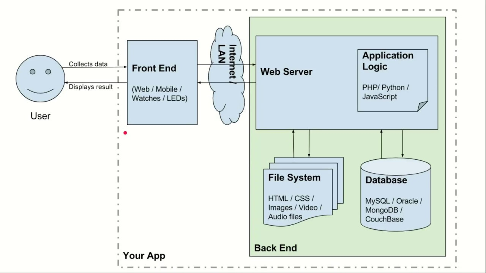

<!doctype html>
<html lang="en">
  <head>
    <meta charset="utf-8">

    <title>Fundamentals of Backend and Blockchain Development</title>

    <meta name="author" content="Dhruvin Parikh">

    <meta name="apple-mobile-web-app-capable" content="yes" />
    <meta name="apple-mobile-web-app-status-bar-style" content="black-translucent" />

    <meta name="viewport" content="width=device-width, initial-scale=1.0, maximum-scale=1.0, user-scalable=no, minimal-ui">

    <link rel="stylesheet" href="../../reveal.js/css/reveal.css">
    <link rel="stylesheet" href="../../reveal.js/css/theme/black.css" id="theme">

    <!-- Code syntax highlighting -->
    <link rel="stylesheet" href="../../reveal.js/lib/css/zenburn.css">

    <!-- Printing and PDF exports -->
    <script>
      var link = document.createElement( 'link' );
      link.rel = 'stylesheet';
      link.type = 'text/css';
      link.href = window.location.search.match( /print-pdf/gi ) ? '../../reveal.js/css/print/pdf.css' : '../../reveal.js/css/print/paper.css';
      document.getElementsByTagName( 'head' )[0].appendChild( link );
    </script>

    <!--[if lt IE 9]>
    <script src="../reveal.js/lib/js/html5shiv.js"></script>
    <![endif]-->

    <style>
      .reveal .slides h1, .reveal .slides h2, .reveal .slides h3 {
        text-transform: none;
      }

      .two-column {
        display: flex;
        flex-wrap: wrap;
      }

      .two-column em {
        margin: 20px;
      }

      .reveal .big-and-bold {
        font-weight: bold;
        font-size: 135%;
      }

      .reveal .shrunk-a-bit {
        font-size: 90%;
      }

      .reveal .shrunk-a-bit pre {
        width: 100%;
      }

      .reveal pre {
        width: 100%;
      }

      .reveal .highlight {
        color: yellow;
        font-weight: bold;
      }

      .reveal .highlightRed {
        color: red;
        font-weight: bold;
      }
    </style>
  </head>

  <body>
    <div class="reveal">
      <div class="slides">

<!------------------------------------------------------->


<section data-markdown><script type="text/template">

## CSBC 1000 - Fundamentals of Backend and Blockchain Development

### Class 1: The three-tier architecture

*Dhruvin Parikh*

</script></section>

<section data-markdown><script type="text/template">
## `$WHOAMI`  
- DeFi developer and Web3.0 instructor.  
- Senior Blockchain Developer and CTO at opty.fi
- Also Adjunct Professor at George Brown College in Blockchain Development Program 
</script></section>

<section data-markdown><script type="text/template">
## Evaluation
- **knowledge checks** - 30% 
- **Final Project (milestone 1)** - 35%
- **Final Project (milestone 2)** - 35%
</script></section>

<section data-markdown><script type="text/template">

## Class Plan
* Course Overview
* Introduction to three-tier architecture
* Frontend development
* Backend development
* Full stack development
* Project expectations
</script></section>

<section data-markdown><script type="text/template">

## Course Overview

* Learn core concepts of front end, backend and fullstack and blockchain development
* Solving problems with help of blockchain technology and other off-chain components
* Final project work in groups.
* Knowledge checks/coding activity followed by the end of each class
* Moodle includes *THINK* questions as a brainstorming exercise.
</script></section>


<section data-markdown><script type="text/template">

## DBMS architecture

* **Single tier architecture** 
  * Client, server and database reside on same machine
* **Two tier architecture**
  * Server and database reside on same machine
* **Three tier architecture**
  * functional processes, logic, data access, data storage and UI interface done independently a separate modules
</script></section>


<section data-markdown><script type="text/template">

## Three tier DBMS architecture diagram


</script></section>

<section data-markdown><script type="text/template">

## Goal of three tier architecture

* Segregate user applications and physical database
* DBMS characteristic 
* Program-data independence
* Multiple views of Data

</script></section>


<section data-markdown><script type="text/template">

## Layers of 3 tier architecture

* **Presentation layer**
  * HTML, JavaScript, CSS
* **Application layer**
  * Java, .NET, C#, Python, C++
* **Database server**
  * MySQL, PostgreSQL, SQL Server, MongoDB

</script></section>


<section data-markdown><script type="text/template">

## Presentation layer

* Consists of web-based user interface displaying content usedful to end user
* Web-based application mostly build with Php, HTML, JavaScript and CSS based frameworks like React, Next, Vue, Nuxt, etc
* Mobile based application mostly build with Swift, Android, React native, ionic, Xamarin, Objective C etc

</script></section>
  
  
<section data-markdown><script type="text/template">

## Application layer

* Contains application's business logic to drive application's core capabilities
* Mostly build using NodeJS, Java, .NET, C#, Python, C++, etc

</script></section>


<section data-markdown><script type="text/template">
  
## Data layer

* Contains database/data storage system and data access layer.
* Mostly spinned up using MySQL, PostgreSQL, MongoDB, etc
* The application layer accesses data via API calls.
* Useful for scaling the system
  
</script></section>

<section data-markdown><script type="text/template">

## Sample Data 
* Insight for e-commerce store's customer location 
<pre class="hljs js">
    <span class="highlight">id, first_name, last_name, email, city</span>
    1, Rufe, Loynes, rloynes0@imgur.com, Nanchangshan
    2, Elfie, Daines, edaines1@com.com, Bromolla
    3, Steven, Philpault, sphilpault2@nps.gov, Russkiy
    4, Bibby, Leyban, bleyban3@weebly.com, Gul'cha
    5, Sheena, Cochet, scochet4@vimeo.com, Begles
    6, Heriberto, Neasam, hneasam5@soup.io, Watergrasshill
    7, Brett, Spellessy, bspellessy6@ow. ly, Villa Elisa
    8, Spencer, MacCaig, smaccaig7@xrea.com, Terek
    9, Ezekiel, Favela, efavela8@nasa.gov, Yamaguchi - shi
    10, Hersch, Geratasch, hgeratashch9@biblegateway.com, Wan'an
</pre>

</script></section>


<section data-markdown><script type="text/template">

  ## Frontend
  
  * Lies on application layer
  * Provides visual and interactive experience to user
  * Parses data from data layer and presents in human readable form.  
  
</script></section>


<section data-markdown><script type="text/template">

## UI/UX design
  
* Look and feel of the application
* Tools like Adobe XD, Figma, Lucid chart, etc are used for wire framing and simulation
  
</script></section>

  
<section data-markdown><script type="text/template">

  ## Development
  
  * The wireframs created during UI/UX design is converted into code.
  * Involves creating visual components around the screen of the device
  * **Client Side rendering**
    *  Page gets renders entirely by client side javascript
  * **Server side rendering**
    * HTML is generated at each request.
</script></section>
  

  
<section data-markdown><script type="text/template">
  
  ## Deployment/Publishing
  
  * Web application can be deployed on the hosted services on the internet
  * Mobile applications can be published to its corresponding digital distribution service.
  
</script></section>
  
  
<section data-markdown><script type="text/template">
  
  ## Backend
  
  * Decision on storing and computation of data
  * Requires robust planning as it takes important decisions.
  * Scalable, reliable and maintainable
  
</script></section>

<section data-markdown><script type="text/template">
  
  ## System design

  * Requirement gathering
  * High level system design
  * Design core components like API, data model
  * Identify bottle necks and scale up the system

  <aside class="notes">
    Sequence 1 :
    Who is this system for?
    How will this end user get access to your service?
    How many users do you estimate will be on this service hourly, daily, annually?
    What do the requests to the system look like?
    What will users expect this service to output?
    Will the system be more read heavy than write intensive?
    How fast should search results be?
    Should user requests be handled in real time?
    Will web traffic always be equally distributed across all locations your service will be deployed?
    
    Sequence 4 :
    Design core components like the API, data model
    Do your use cases point you towards a relationship data model or document-based model?
    Will you use RPC, SOAP, REST or another API model (if your service is web based)?
    For each endpoint on your API, what will the request body/parameters contain?
    If tasks take too long, how do you store them so that their status can be later queried by a user?
    How will your service authenticate and authorize users?
    Will any processes in your service depend on an external service?

    Sequence 5 :
    What portion of the code/system takes too long?
    Can certain tasks be broken up and handled by smaller child processes?
    Is it possible to store static files separately and closer to your users with a CDN?
    How do you ensure that if a server or database goes down, your service won’t go down as well?
    Is there a way to monitor and log the behaviour of your service?
  </aside>
  
</script></section>

<section data-markdown><script type="text/template">
  
  ## High level design

  
  
</script></section>
  
  

<section data-markdown><script type="text/template">
  
  ## Three tier application architecture

  
  
  
</script></section>
  


<section data-markdown><script type="text/template">
  
  ## Backend development
  
  * Selecting database (SQL v/s NoSQL)
  * Application configuration
  * Code Review
  * Testing - unit, integration, system, acceptance
  * Technical debt
  * **Deployment environments**
    * Development, testing, staging, production 
  
</script></section>


<section data-markdown><script type="text/template">
  
  ## Development stacks
  
  * LAMP stack - Linux Apache MySQL PHP
  * MEAN stack - MongoDB Express Angular Node
  * MERN stack - MongoDB Express React Node
  * JAM stack - Javascript API Markup
  
</script></section>

<section data-markdown><script type="text/template">

## Final Project discussion

* Milestone #1
* Milestone #2
    
</script></section>


<section data-markdown><script type="text/template">

## End of Class

</script></section>


<!------------------------------------------------------->


      </div>

    </div>

    <script src="../../reveal.js/lib/js/head.min.js"></script>
    <script src="../../reveal.js/js/reveal.js"></script>
    <script src="../../reveal.js/plugin/zoom-js/zoom.js"></script>

    <script>

      // Full list of configuration options available at:
      // https://github.com/hakimel/reveal.js#configuration
      Reveal.initialize({
        controls: true,
        progress: true,
        history: true,
        center: true,

        transition: 'none', // none/fade/slide/convex/concave/zoom

	math: {
          mathjax: '../lib/MathJax/MathJax.js',
          config: 'TeX-AMS_SVG-full',
	},

        // Optional reveal.js plugins
        dependencies: [
          { src: '../../reveal.js/plugin/markdown/marked.js', condition: function() { return !!document.querySelector( '[data-markdown]' ); } },
          { src: '../../reveal.js/plugin/markdown/markdown.js', condition: function() { return !!document.querySelector( '[data-markdown]' ); } },
          { src: '../../reveal.js/plugin/highlight/highlight.js', async: true, callback: function() { hljs.initHighlightingOnLoad(); } },
          { src: '../../reveal.js/plugin/math/math.js', async: true }
        ]
      });

    </script>

  </body>
</html>